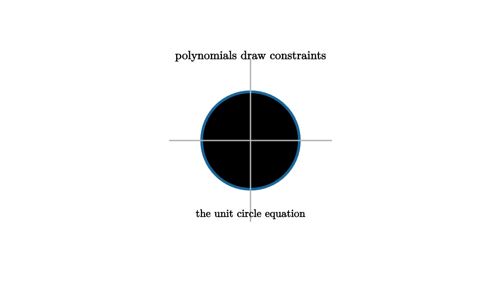

Rings, Fields, and Polynomial Geometry
Groups capture one operation. Rings carry two: addition and multiplication. The integers are the first model, but the more visual model is a ring of functions. Add two functions pointwise. Multiply them pointwise. A polynomial ring stores algebraic shapes, and its equations cut out geometric sets.
The polynomial x^2 + y^2 - 1 cuts out a circle. The polynomial xy cuts out the union of the coordinate axes. Factorization has geometry: xy = 0 means x = 0 or y = 0. A product vanishes when at least one factor vanishes, so algebra splits the picture.

source
mesh scene = [
center{1.35u} Text("polynomials draw constraints", 0.68),
stroke{BLUE, 4} Circle(0.78),
stroke{LIGHT_GRAY, 2} Line(1.3l, 1.3r),
stroke{LIGHT_GRAY, 2} Line(1.3d, 1.3u),
center{1.18d} Text("the unit circle equation", 0.62)
]Fields enter when division is always possible outside zero. The rational numbers, real numbers, complex numbers, and finite fields each support arithmetic with division. Changing the field changes the geometry. Over the real numbers, x^2 + 1 = 0 has no point. Over the complex numbers, it has two. Over a finite field, curves become finite point sets with rich patterns.
Rings also organize constraints through ideals. If an ideal is generated by f and g, then it contains all polynomial combinations af + bg. Geometrically, the common zero set of f and g is unchanged by replacing f and g with any such combinations. This is the algebraic heart of elimination and solving systems.
source
let CurveA = |col| stroke{col, 4} Circle(0.75)
let CurveB = |col| stroke{col, 4} [
Line([-1.1, 0, 0], [1.1, 0, 0]),
Line([0, -1.1, 0], [0, 1.1, 0])
]
"Circle"
mesh title = center{1.35u} Text("factorization changes the picture", 0.66)
mesh curve = CurveA(BLUE)
mesh caption = center{1.22d} Text("one irreducible-looking curve", 0.62)
play Fade(0.7)
play Write(0.7)
"Product"
curve = [
fade{0} CurveA(BLUE),
fade{1} CurveB(ORANGE)
]
caption = center{1.22d} Text("a product equation splits into pieces", 0.62)
play [Trans(1.0, [&curve]), Trans(0.6, [&caption])]The quotient ring is the algebraic move that makes constraints official. In R[x]/(x^2 - 1), the equation x^2 = 1 is enforced everywhere. Any high power of x reduces to either 1 or x. In C[x]/(x^2 + 1), the class of x behaves like i. Quotients create new arithmetic worlds by declaring selected expressions to be zero.
This is why rings and fields matter far beyond symbolic manipulation. Error-correcting codes use polynomials over finite fields. Cryptographic protocols use finite field arithmetic and elliptic curves. Signal processing uses quotient rings when cyclic convolution turns x^n into 1. Algebraic geometry uses ideals and coordinate rings to translate between equations and spaces.
A visual understanding prevents quotient rings from feeling like bookkeeping. Imagine every polynomial as a shape of values, and every ideal as a rule that identifies shapes differing by allowed constraints. The quotient keeps only the information that survives those identifications.
Abstract algebra in motion now has a second theme. Groups move objects. Rings shape arithmetic environments. Fields allow clean division. Polynomial rings let equations and geometry speak to each other. Once you see multiplication as interaction between constraints, algebra becomes a way to build, split, and simplify mathematical worlds.